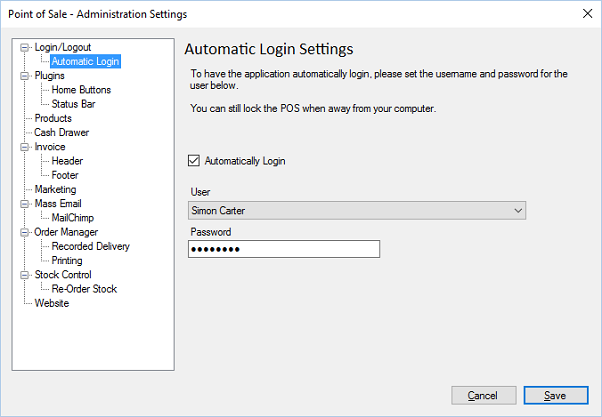

Automatic login1 allows administrators to login to the POS automatically using a pre-
configured user account.

Automatically Login. If set, the POS will attempt to automatically login when initially
loading.
User. The user account that is used to login automatically.
Password. The password for the user.
1 Please note, even if you login automatically it is still possible to lock the POS, to prevent
unauthorised access.